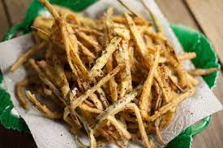

prep: 5m
cook: 25m
difficulty: easy
nutrition
kcal 230
fat 13
saturates 2g
carbs 18g
sugars 3g
fibre 3g
pretein 8g
salt 0.13g
prep: 5m
cook: 25m
difficulty: easy
kcal 230
fat 13
saturates 2g
carbs 18g
sugars 3g
fibre 3g
pretein 8g
salt 0.13g
step 1
Tip the flour into a bowl, drizzle in 2 tbsp water and mix to form a thick batter. Season with plenty of salt and freshly ground black pepper, then mix in the courgettes.
step 2
Pour oil into a pan until it is about 4cm deep, ensuring the pan is no more than two thirds full. Set over a medium heat until 180C or a flick of batter dropped in sizzles and turns brown within 30 seconds. Lower half the battered courgettes into the hot oil and fry, turning after 1 min using a slotted spoon, for 5-6 mins until golden. If they begin to stick together, gently coax them apart with tongs. Remove from the hot oil and drain on a plate lined with a sheet of kitchen paper. Repeat with the remaining half, then scatter with the parmesan before serving